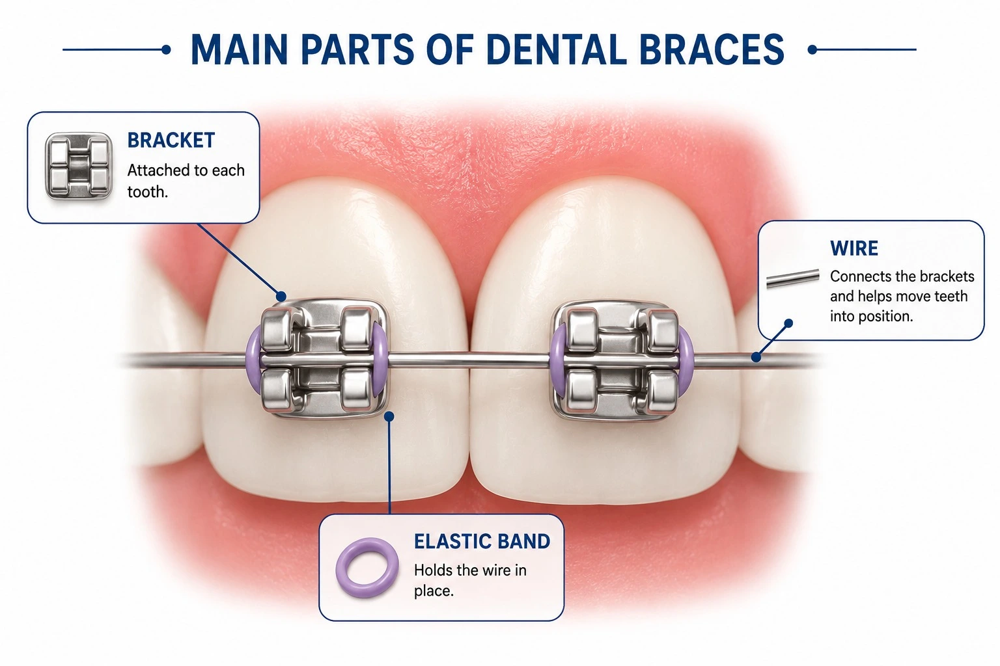

Braces and clear aligners are two popular orthodontic treatment options, but deciding which one is right for you can be challenging.
Both treatments are designed to straighten teeth and improve alignment, yet they differ in how they work and what the treatment experience involves.
Understanding these differences can help you make a more informed decision. In this guide, we'll compare braces and clear aligners, highlighting their benefits, limitations, and key differences to help you determine which treatment may best suit your needs.
What Are Dental Braces and How Do They Work?

Dental braces are fixed orthodontic devices used to straighten teeth and correct bite alignment issues (problems with how the upper and lower teeth meet when the mouth is closed). They consist of brackets attached to the teeth and connected by an archwire that applies gentle, controlled pressure to gradually move teeth into their desired positions.
Several types of braces are available, including metal braces, ceramic braces, and lingual braces. Because braces stay fixed to the teeth throughout treatment, they apply continuous forces and do not rely on patient wear compliance.
Types of Dental Braces:
There are three most commonly used braces-
- Metal Braces: The most common type, made of stainless steel brackets and wires.
- Ceramic Braces: The brackets are tooth-colouredmaking them less visible than metal braces.
- Lingual Braces: Attached to the back side of the teeth, making them less visible than traditional braces. However, they may be less comfortable initially and can be more difficult to clean and adjust than other orthodontic options.
However, the best treatment option depends on the individual's orthodontic requirements.
Advantages of Braces:
- Effective for a wide range of orthodontic concerns
- Can address crowding, spacing, and bite issues
- Work continuously throughout treatment
- Suitable for patients who may find removable appliances difficult to manage
Limitations of Braces:
- More visible than clear aligners
- Food restrictions may be necessary
- Cleaning around brackets and wires requires additional effort
- Some patients may experience mild discomfort for a few days after orthodontic appointments.
What Are Clear Aligners and How Do They Work?
Clear aligners are removable, transparent trays designed to gradually move teeth into their desired positions. Each set of aligners is custom-made to fit the patient's teeth and applies controlled forces to guide tooth movement over time.
Treatment typically involves a series of aligners that are replaced at prescribed intervals. Unlike braces,aligners can be removed for eating, drinking, brushing, and flossing. However, they must be worn consistently to achieve the planned results.
Advantages of Clear Aligners:
- Nearly invisible when worn
- Removable for meals and oral hygiene
- No brackets or wires
- Fewer dietary restrictions compared with braces
Limitations of Clear Aligners:
- Require consistent daily wear
- Can be misplaced or damaged
- May not be suitable for every orthodontic case
- Progress may be affected if aligners are not worn as instructed
Quick Comparison: Braces vs Clear Aligners
Appearance: Braces vs Clear Aligners
One of the most noticeable differences between braces and clear aligners is their appearance.
Braces:
- Metal braces are visible when smiling or speaking.
- Ceramic braces are less noticeable because they blend more closely with the natural colour of the teeth.
- Lingual braces are placed behind the teeth and remain largely hidden from view.
Clear Aligners:
- Made from transparent plastic.
- Fit closely over the teeth.
- Designed to be less noticeable during everyday activities.
For patients who prioritise aesthetics, clear aligners are generally considered the more discreet option. However, treatment suitability must also be considered when making a decision.
Comfort, Convenience & Dietary Habits
Oral Hygiene: Keeping Your Smile Clean
Treatment Time & Effectiveness
Treatment time varies from person to person and depends on factors such as:
- Severity of misalignment
- Bite correction requirements
- Patient age
- Treatment compliance
- Individual biological response
Both braces and clear aligners can effectively improve tooth alignment when used in suitable cases and monitored appropriately.While braces have long been used to treat a wide range of orthodontic concerns, clear aligners can also address many cases successfully.
Because every case is unique, treatment timelines and outcomes should be assessed through a professional orthodontic evaluation rather than assumptions about which option works faster.
Cost of Braces vs Clear Aligners in India
The cost of orthodontic treatment in India can vary depending on several factors, including:
- Type of treatment selected
- Complexity of the case
- Treatment duration
- Geographic location
- Orthodontist's experience
- Additional procedures, if required
Because treatment plans are customised for each patient, costs can vary significantly. A professional consultation is the most reliable way to receive an accurate treatment estimate.
When comparing treatment options, it is important to consider not only cost but also factors such as treatment goals, suitability, and follow-up care rather than focusing exclusively on the initial price.
When comparing treatment options, it is important to consider not only cost but also factors such as treatment goals, suitability, and follow-up care rather than focusing exclusively on the initial price.
Which One Is Right for You?
The choice between braces and clear aligners depends on a combination of clinical requirements and personal preferences.
1. For Adults: Prioritizing Aesthetics and Lifestyle
- Many adults seek orthodontic treatment while balancing professional, social, and personal responsibilities.
- Clear aligners are often chosen by adults who prefer a less noticeable treatment option. Their removable design may also appeal to individuals who want flexibility during meals and oral hygiene routines.
However, the best treatment option depends on the individual's orthodontic requirements.
2. For Teenagers: Compliance and Convenience
- Both braces and clear aligners can be suitable for teenagers.
- Braces do not rely on daily compliance because they remain attached to the teeth throughout treatment. This may be beneficial for some younger patients.
- Clear aligners can provide a discreet alternative, but treatment success depends on wearing them consistently according to professional instructions.
Parents and orthodontists often consider maturity, responsibility, and treatment goals when determining the most appropriate option.
An orthodontic evaluation is necessary to determine which treatment option is most appropriate for an individual's needs.
Who Is a Good Candidate for Braces or Aligners?
Braces may be suitable for:
- Patients requiring a fixed orthodontic appliance
- Individuals who may find removable appliances difficult to manage consistently
- A wide range of orthodontic concerns
Clear aligners may be suitable for:
- Patients seeking a more discreet treatment option
- Individuals who can commit to wearing aligners as instructed
- Certain orthodontic concerns that can be managed effectively with removable appliances
Are Results Permanent? (Understanding Retainers)
Orthodontic treatment does not end when braces are removed or clear aligner treatment is completed. After treatment, patients are typically given retainers—custom-made devices designed to help keep teeth in their new positions.
This is important because the surrounding bone and tissues need time to adapt to theteeth's new positions.Without regular retainer use, teeth may gradually shift back to their original position over time, a process known as orthodontic relapse.
Retainer recommendations vary between patients and should be followed according to professional guidance.
Conclusion: Making the Best Choice for Your Smile
Both braces and clear aligners can effectively straighten teeth and improve orthodontic alignment. Each treatment option offers its own advantages and considerations, making the right choice dependent on individual needs and treatment goals.
While clear aligners may appeal to those seeking a more discreet treatment experience, braces remain a reliable option for addressing a wide range of orthodontic concerns.
Ultimately, a professional orthodontic evaluation is the best way to determine which treatment option is most suitable for your smile.
Disclaimer: This blog is for educational purposes and does not replace professional dental consultation.
Frequently Asked Questions (FAQs)
References
- 1.American Association of Orthodontists. (n.d.). Braces vs clear aligners.
- 2. American Association of Orthodontists. (n.d.). Braces.
- 3. American Association of Orthodontists. (n.d.). Clear aligners.
- 4. Cleveland Clinic. (n.d.). Clear braces.
- 5. American Dental Association. (n.d.). Braces. MouthHealthy.
- 6. National Library of Medicine. (n.d.). Orthodontic treatment studies (PMC6343314).
- 7. Apollo Dental. (n.d.). Dental braces and aligners treatment.
Authored By
Dr. R. Manjula
BDS, Fellowship in Endodontics
A dentist and dental health educator with a strong focus on practical, evidence-based dentistry. She values clear communication in clinical care and works towards improving patient awareness, supporting timely decisions that contribute to better long-term oral health outcomes.